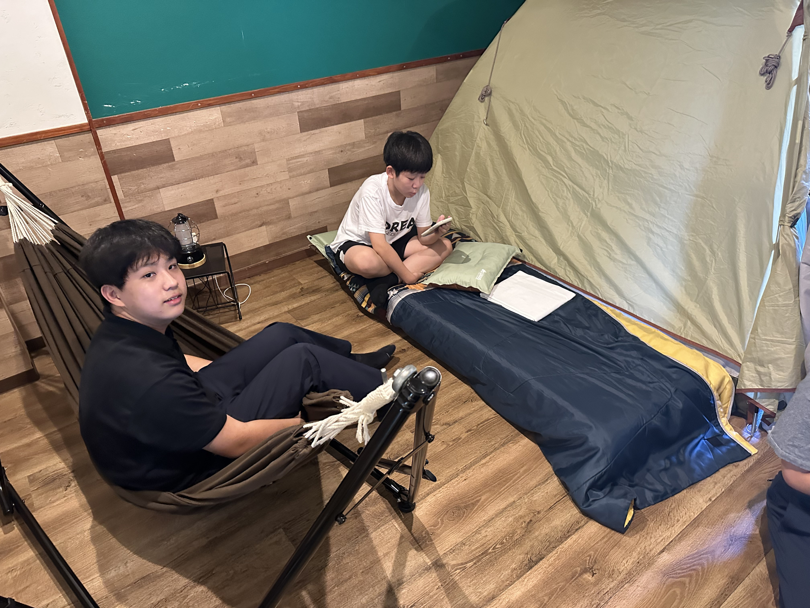
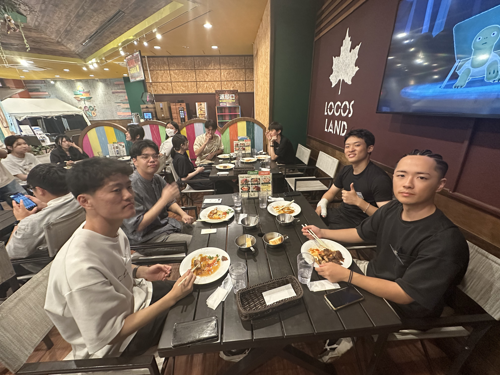
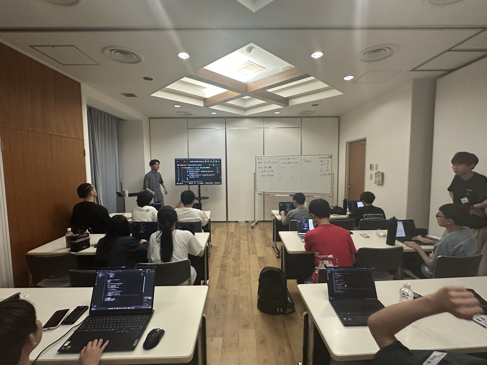
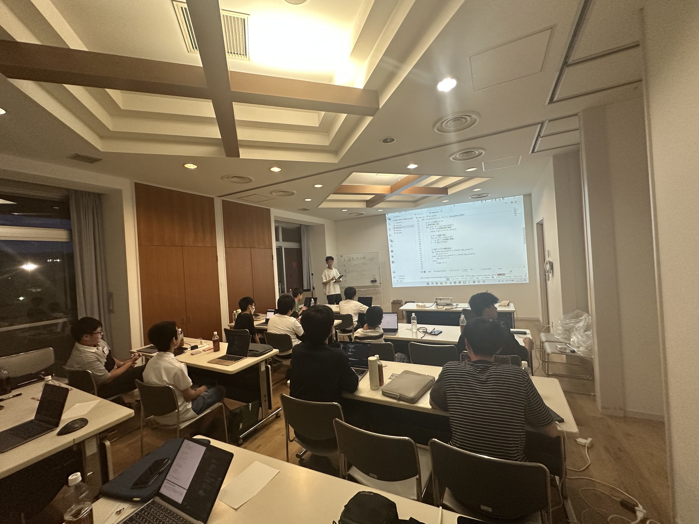

合宿がスタートしました！
京都から10名、大阪から13名、東京から1名、横浜から1名。
あわせて25名の生徒が参加してくれました。
暑いなかでも元気よく、そして時間どおりにみんな揃い、安心しました。 昨年度よりバス組の人数が増えたため、2グループに分かれて移動しました。
到着したとき、前回参加者は「懐かしい～」、初めての子は「おぉ～」と、それぞれの反応が印象的でした。 少し緊張した表情の子もいましたが、すぐに笑顔が見られるように。 ワクワクした気持ちで、3日間のスタートを切ってくれました。
車で送ってもらったメンバーは、保護者の方と一緒にスタッフが宿泊場所までご案内。 これから3日間過ごす環境を、ご家族でも確認していただけました。



新しい仲間との出会い！
車やバスでロゴスランドに集合！ さっそく宿泊する部屋へ案内され、各部屋を担当する先生と一緒に、最初の挨拶を行いました。
自己紹介をしながら各部屋の班長も決定。 班長は、合宿期間中に責任を持って班メンバーをまとめる役割です。 動きの確認やスケジュールなど、ほかのメンバーとは違う動きも取るため、得難い経験になるはずです。
各部屋では担当スタッフより、3日間のルールも共有しました。 ただ「楽しい！」だけで過ごすのではなく、ご家庭から離れた環境だからこそルールを守り、 誰もが良い経験ができるよう確認しました。
新しい出会いだからこそ、コミュニケーションが大切になります。 出会いと挨拶を終えたら、いよいよ合宿開始。教室へ移動し、開講式へ向かいました。
開講式！
開始に向けて、スタッフ陣は教室をセット。 2クラス分の教室をひとつにつなぎ、大きな教室として運営できるよう準備しました。 各メンバーが迷わないよう、参加していることが分かる名札も用意し、3日間は見える位置につけて過ごしてもらいます。
開講式では、参加者全員が集合し、これから始まる3日間の流れを確認。 今回の合宿に参加したスタッフから、挨拶と意気込みを子どもたちへ伝えました。
非日常だからこそできること、普段の教室とは違う緊張感、新しい仲間との出会い。 いろいろな経験が始まろうとする瞬間を、みんなで共有しました。
始まる瞬間は少し緊張感のある雰囲気でしたが、ワクワクする気持ちの方が強く、最後は笑顔で終了しました。


授業スタート！トランプゲームをコードで表現
開講式のあと、クラスを分かれて2クラス体制で授業開始！
まずは今回のテーマ、トランプゲームのルール確認から。 スタッフが開発したシミュレーションで実際の動きを確認しつつ、ルールを押さえ、 自分たちでも動かしてマスターしました。 ただ、どうすれば戦略的に勝てるかは、これからの課題です！
テーマと動きを確認したうえで、「どうやって実装すればいい？」と考え、 トランプゲームのルールや動きをコードに書き起こしていきました。 動きをイメージしながら照らし合わせるようにコードを書くので、 「トランプゲームはルールさえ分かれば、Pythonでもコードを書けるんだ！」という気づきと、 そのための実装方法を身につけていきました。
授業中はさまざまなスタッフが出入りし、刺激があり、何より動きのある時間になりました。 子どもたちは新鮮な気持ちで、しっかり集中して取り組んでいました。
カメラを向けると嬉しそうに笑顔を見せてくれる子もいれば、照れながら振り向いてくれる子も。 それぞれの表情が印象的でした。
合宿最初のご飯タイム♪
授業の合間を縫って、夕食を取りました！
一息つけるタイミングでおいしい夕食をいただきつつ、仲間たちとの絆をさらに深める時間にもなりました。 食事の班では、同じ校舎だけでなく、違う校舎のメンバーとも話しながらの夕食です。 「私の校舎は～」といった話が飛び交っていたかもしれません。スタッフとしても気になるところです……！
参加している学生スタッフともコミュニケーションを取り、少しワイワイとした雰囲気のなかで楽しめました。 学生スタッフたちもこのタイミングでお互いのことを話し合い、仲間意識を高めていました！



夕食後は少し休憩タイム～そして、1日目追い込み授業🔥
ご飯のあとは少し休憩タイム。眠気が見えてきた子もいるタイミングでした。 仲良く雑談する生徒もいれば、休憩を利用して仲間と遊んでいるメンバーも。
1時間の休憩後、1日目最後の授業スタート！ 2時間の追い込みで、初期コードの完成を目指しました。 いつもと違う進め方のコーディングになる分、何をしているか見失わないよう先生が丁寧にリード。 細かいエラーはサポートメンバーがフォローしているので安心です。
疲れが見えつつある時間帯でも、途中の休憩や雑談でメリハリをつけたり、 サポートメンバーの声かけがあったりと、最後まで頑張り抜けました。 合宿初日の授業、無事に終了。お疲れさまでした！


合宿1日目、お疲れ様でした。
授業終了後は班ごとに入浴タイム。 入浴後は教室でゆっくり過ごすメンバーと、部屋に戻って明日に備えるメンバーで分かれて過ごしました。
普段とは異なる環境だからこそ、それぞれが自分で考えて動き、自分なりに楽しむ形で1日目を終えました。
2日目からは本格的な実装に入り、本題である「戦略」をコードに落とし込み、 勝つためのプログラムを作り上げていきます。
しっかりやり切る1日になります。そして、BBQを楽しみに……。